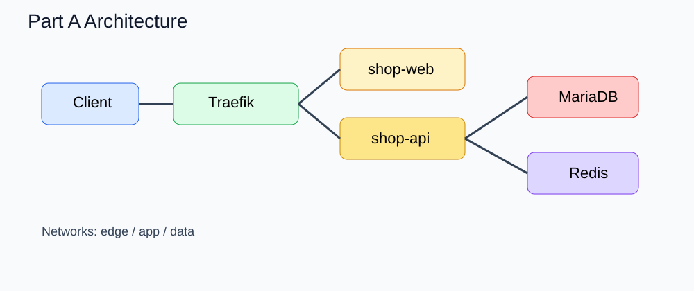

이 실습의 핵심은 Docker Stack 으로 이커머스 서비스를 배포하고, 배포 후 운영자가 수행하는 기본 제어 루틴을 익히는 것입니다.
docker stack deploy 로 스택 배포shop-web, shop-api, MariaDB, Redis 서비스 확인drain / active 전환과 task 이동 확인docker stack 과 docker service 조작은 manager 에서 수행 Docker Docsdocker stack deploy 는 legacy Compose v3 계열 형식을 기준으로 구성 Docker Docsdrain 시 서비스 task 는 active 노드로 재배치 Docker Docsdeploy.labels 에 두는 것이 중요 Traefik Docsdocker node ls
기대 상태:
swarm-manager = Ready / Active / Leader or Reachableswarm-worker1 = Ready / Activeswarm-worker2 = Ready / Activebash scripts/node-labeling.sh
혹은 직접:
docker node update --label-add zone=az1 swarm-worker1
docker node update --label-add zone=az2 swarm-worker2
docker node update --label-add db=true swarm-worker1
.env.example 를 참고해 레지스트리 주소를 정합니다.
bash scripts/build-images.sh
bash scripts/push-images.sh
주 파일:
stack/base/stack-a.ymlconfigs/traefik/traefik.ymlconfigs/app/web-banner-v1.jsonconfigs/app/api-feature-flags-v1.json핵심 포인트:
docker stack deploy -c stack/base/stack-a.yml ecommerce-a
배포 확인:
docker stack services ecommerce-a
docker stack ps ecommerce-a
세부 확인:
docker service ls
docker service ps ecommerce-a_shop-web
docker service ps ecommerce-a_shop-api
curl http://MANAGER_HOST/
curl http://MANAGER_HOST/api/health
curl http://MANAGER_HOST/api/ready
curl http://MANAGER_HOST/api/products
shop-web 과 shop-api 가 여러 노드에 분산되었는지 docker service ps 로 확인합니다.
docker service scale ecommerce-a_shop-web=3
docker service scale ecommerce-a_shop-api=4
docker service ls
docker service ps ecommerce-a_shop-web
docker service ps ecommerce-a_shop-api
새 태그 이미지를 준비한 뒤 아래처럼 업데이트합니다.
docker service update \
--image REGISTRY/shop-api:1.1.0 \
--update-parallelism 1 \
--update-delay 10s \
ecommerce-a_shop-api
확인:
docker service ps ecommerce-a_shop-api
docker service logs -f ecommerce-a_shop-api
의도적으로 잘못된 태그 또는 잘못된 환경값으로 업데이트한 뒤 즉시 되돌립니다.
docker service update --rollback ecommerce-a_shop-api
공식적으로 rollback 은 docker service update --rollback 으로 수행합니다 Docker Docs.
docker service ps ecommerce-a_shop-web
docker service ps ecommerce-a_shop-api
docker node update --availability drain swarm-worker1
docker node inspect swarm-worker1 --pretty
docker service ps ecommerce-a_shop-web
docker service ps ecommerce-a_shop-api
docker node update --availability active swarm-worker1
예를 들어 DB 를 db=true 라벨 노드에만 두도록 설계할 수 있습니다.
docker node update --label-add db=true swarm-worker1
stack 파일의 placement constraint 를 확인하고, docker stack deploy 를 다시 수행해보세요.
현재 web 배너는 web-banner-v1.json 을 사용합니다. 새 config 를 만들고 스택 재적용으로 반영합니다.
docker config create web-banner-v2 configs/app/web-banner-v2.json
stack 파일에서 새 config 이름을 참조하도록 바꾼 뒤 재배포합니다.
docker stack deploy -c stack/base/stack-a.yml ecommerce-a
curl http://MANAGER_HOST/api/config
기본 secret 은 예제 값입니다. 새 값으로 재생성한 뒤 서비스가 새 secret 을 참조하게 바꿔봅니다.
docker secret create jwt_secret_v2 secrets-example/jwt_secret.txt
그 다음 stack 파일의 secret 참조를 새 이름으로 바꾸고 재배포합니다.
docker stack rm ecommerce-a
필요하면 config/secret/volume 도 정리합니다.
Part A를 끝냈다면 docs/workbook-b.md 로 넘어가 장애대응형 실습을 진행하세요.